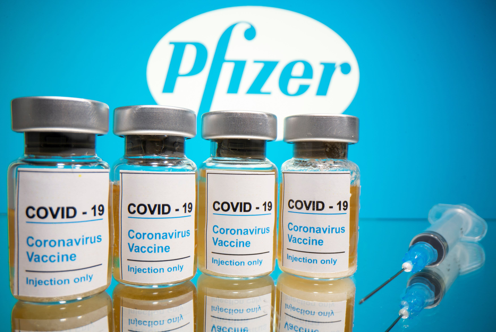

Since the discovery of multiple cases of COVID-19 in December 2019,
the outbreak has spread rapidly across the globe, resulting in many
infections and deaths and posing a significant threat to global public
health security. Because no targeted drug is available, a vaccine for
the coronavirus is critical to contain the spread of COVID-19. We
currently have several major vaccines and booster vaccines available
from Pfizer, Moderna, and Johnson & Johnson in NYC, which have shown
promising results in reducing the overall infection rate.

But inequities in global vaccine access are also becoming apparent.
Due to systematic disparities in access to health resources, we are
interested in exploring whether there exist disparities in vaccination
rates across different races, ages, gender, and geographies in NYC.
Taking the population in NYC as a whole, we are also interested in
whether infection rate (first infections & reinfections) is
associated with vaccination rate across time in NYC.
Datasets
For the purpose of characterizing the pattern of the COVID-19
vaccination rate and infection rate in NYC over time:
We used doses by day data to see the trends of
getting shots of every vaccine. Doses
By Day Data
We also filtered data of NYC on Reinfection Data,
which gave us timely information about the trends in first infections
and reinfections in New York City. Reinfection
Data
For exploring whether there exist disparities in vaccination rates
across different races, ages, gender, and geographies:
we traced back in history and merged all the data related to
“coverge by demo” to coverage by demo full data and
“coverage by boro demo” to coverage boro demo full from People
Focus of our Project
Considering the area in NYC, knowing that the COVID-19 vaccine is
effective, we aimed to show trends in vaccination rate and infection
rate to roughly see the vaccine efficacy. And because of the existence
of global vaccine disparities, we wanted to investigate associations
between the vaccination rate and a range of demographic & geographic
factors.
Main Questions
We followed our exploratory by some detailed questions:
What does the trend of every kind of cumulative
vaccination rate in NYC over days look like?
What does the trend of every kind of daily vaccination
rate over time look like?
What does the trend of infection rate over time look
like, and is there any interesting information we can recognize when
comparing this to the other two above?
What should be the predictors for vaccination rate?
Also, is there a significant association between vaccination
rate and races / ages / gender / boroughs?